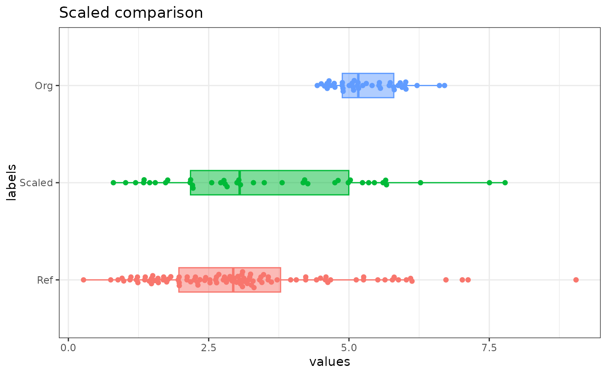
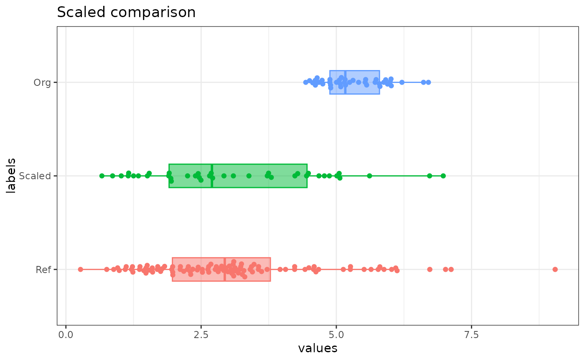

R/e_scale_align.R
e_scale_align.RdAlign the distribution of one empirical distribution to an empirical reference distribution
Variable to rescale
Reference variable distribution
Method of rescaling. "quantile" with c(0.1, 0.9) is remarkably good.
For "quantile", which quantiles to match.
T/F to plot Reference, Original, and Scaled variables.
var_scaled Scaled vector (NAs have been removed)
set.seed(76543)
e_scale_align(
var_to_scale = c(NA, rgamma( 40, shape = 3, rate = 2) + 4, NA)
, var_ref = rgamma(100, shape = 3, rate = 1)
, scale_method = c("quantile", "zscore")[1]
, quantiles_to_match = c(0.1, 0.9)
, sw_plot = c(TRUE, FALSE)[1]
)

#> [1] NA 1.3494455 5.4532527 3.4906782 5.6071643 1.4488231 7.5034412
#> [8] 5.6538993 2.2117834 1.7695449 2.7154055 6.2750679 4.8057442 5.2409074
#> [15] 2.1783472 1.1977642 5.3510984 1.0202577 4.9875945 2.5538329 1.3400836
#> [22] 3.2977787 5.0240422 3.0377773 3.0662941 2.1687348 4.7491240 4.2660275
#> [29] 0.8018342 2.7716135 2.7938306 3.8086655 5.6685056 4.2102306 4.1838424
#> [36] 2.2208905 1.5482661 3.0042876 2.8281651 1.7323266 7.7823056 NA
set.seed(76543)
e_scale_align(
var_to_scale = c(NA, rgamma( 40, shape = 3, rate = 2) + 4, NA)
, var_ref = rgamma(100, shape = 3, rate = 1)
, scale_method = c("quantile", "zscore")[2]
, sw_plot = c(TRUE, FALSE)[1]
)

#> [1] NA 1.1606057 4.8710602 3.0965998 5.0102193 1.2504579 6.7247369
#> [8] 5.0524747 1.9402879 1.5404383 2.3956375 5.6141039 4.2856159 4.6790685
#> [15] 1.9100566 1.0234631 4.7786975 0.8629708 4.4500357 2.2495518 1.1521412
#> [22] 2.9221898 4.4829899 2.6871098 2.7128932 1.9013656 4.2344228 3.7976314
#> [29] 0.6654833 2.4464580 2.4665456 3.3841078 5.0656811 3.7471826 3.7233238
#> [36] 1.9485222 1.3403692 2.6568301 2.4975891 1.5067874 6.9768719 NA